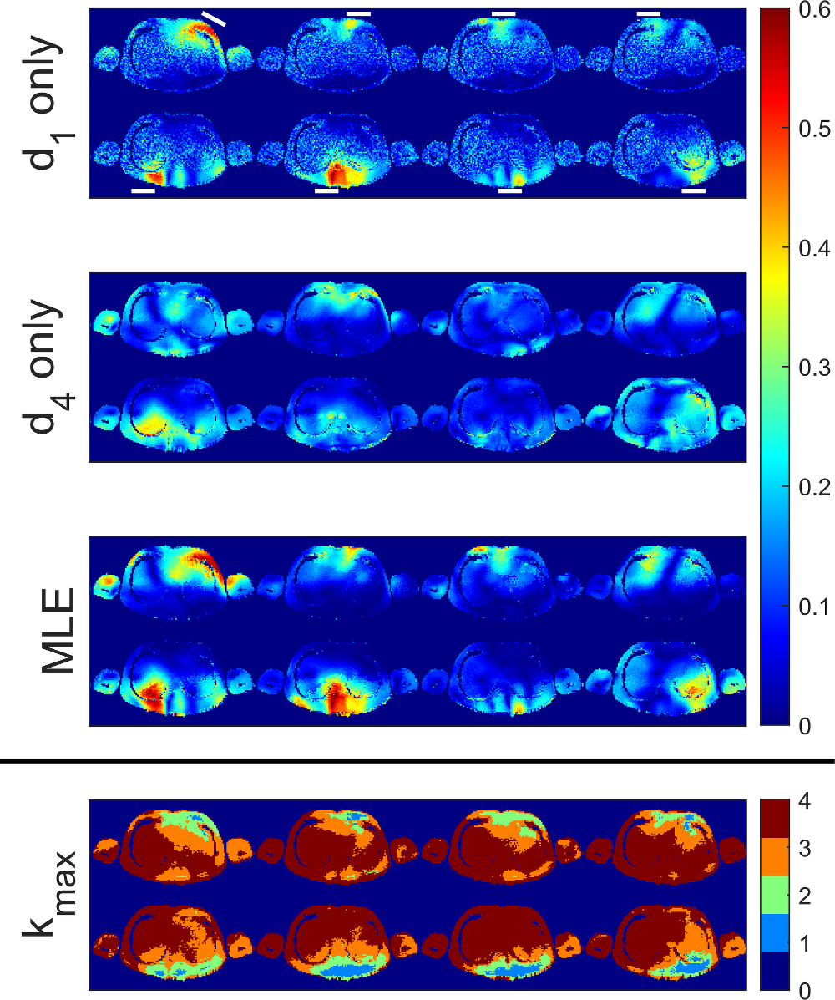

# RF Field Mapping
## Contents
* [Large Dynamic Range Relative B1+ Mapping](#LDRRBM)
<a name="LDRRBM"></a>
## [Large Dynamic Range Relative B1+ Mapping](https://github.com/mriphysics/Large_Dyn_Range_Rel_B1_Mapping/blob/master/README.md)

Relative B1+ mapping in the presence of large dynamic range. Details in this [publication](http://dx.doi.org/10.1002/mrm.25884).
Code can be found in the [repo](https://github.com/mriphysics/Large_Dyn_Range_Rel_B1_Mapping).